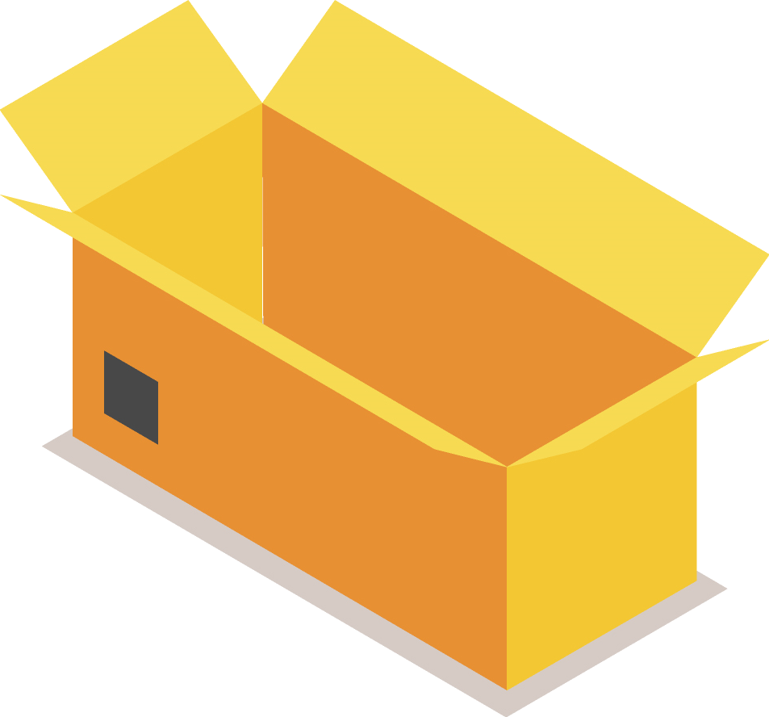

Edit dest code
Caution: do not delete the code entirely
Open this link in a new browser to import current matrix.
Select a hof name file
Site develloped by Adam Mathieson and Arno Cellarier. Fonts copyright their respective owners
v2.0aYour screen is too small
Edit dest code
Start by select a destination ou create it in the side nav.